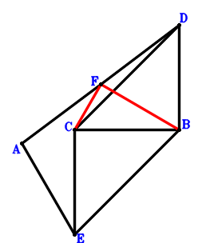
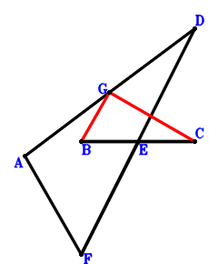

Exercise 1： Let DBEC be a parallelogram. F is the midpoint of AD. BC=EA. Prove that BF⊥FC.

\(\because \) DBEC is a parallelogram \(\therefore \small\overrightarrow{CE}=\small\overrightarrow{CB} - \small\overrightarrow{CD}\).\(\because \) F is the midpoint of AD \(\therefore \small\overrightarrow{CF}=\dfrac{\small\overrightarrow{CA}}{2} + \dfrac{\small\overrightarrow{CD}}{2}\).\(\because \) BC=EA \( \therefore\small\overrightarrow{CB}^{2} - \small\overrightarrow{EA}^{2}=\small\overrightarrow{CB}^{2} - \left(\small\overrightarrow{CA} - \small\overrightarrow{CE}\right)^{2}=\small\overrightarrow{CB}^{2} - \left(\small\overrightarrow{CA} - \small\overrightarrow{CB} + \small\overrightarrow{CD}\right)^{2}=- \small\overrightarrow{CA}^{2} + 2 \small\overrightarrow{CA} \cdot \small\overrightarrow{CB} - 2 \small\overrightarrow{CA} \cdot \small\overrightarrow{CD} + 2 \small\overrightarrow{CB} \cdot \small\overrightarrow{CD} - \small\overrightarrow{CD}^{2}=0.\)In conclusion, \(\small\overrightarrow{BF} \cdot \small\overrightarrow{CF}=\small\overrightarrow{CF} \cdot \left(- \small\overrightarrow{CB} + \small\overrightarrow{CF}\right)=\left(\dfrac{\small\overrightarrow{CA}}{2} + \dfrac{\small\overrightarrow{CD}}{2}\right) \cdot \left(\dfrac{\small\overrightarrow{CA}}{2} - \small\overrightarrow{CB} + \dfrac{\small\overrightarrow{CD}}{2}\right)=\dfrac{\small\overrightarrow{CA}^{2}}{4} - \dfrac{\small\overrightarrow{CA} \cdot \small\overrightarrow{CB}}{2} + \dfrac{\small\overrightarrow{CA} \cdot \small\overrightarrow{CD}}{2} - \dfrac{\small\overrightarrow{CB} \cdot \small\overrightarrow{CD}}{2} + \dfrac{\small\overrightarrow{CD}^{2}}{4}=0\), that is, BF⊥FC.
Exercise 5： Let G be the midpoint of AD. E is the midpoint of BC and FD. BC=AF. Prove that BG⊥GC.

\(\because \) E is the midpoint of BC \(\therefore \small\overrightarrow{CE}=\dfrac{\small\overrightarrow{CB}}{2}\).\(\because \) E is the midpoint of FD \(\therefore \small\overrightarrow{CF}=- \small\overrightarrow{CD} + 2 \small\overrightarrow{CE}=\small\overrightarrow{CB} - \small\overrightarrow{CD}\).\(\because \) G is the midpoint of AD \(\therefore \small\overrightarrow{CG}=\dfrac{\small\overrightarrow{CA}}{2} + \dfrac{\small\overrightarrow{CD}}{2}\).\(\because \) BC=AF \( \therefore\small\overrightarrow{CB}^{2} - \small\overrightarrow{FA}^{2}=\small\overrightarrow{CB}^{2} - \left(\small\overrightarrow{CA} - \small\overrightarrow{CF}\right)^{2}=\small\overrightarrow{CB}^{2} - \left(\small\overrightarrow{CA} - \small\overrightarrow{CB} + \small\overrightarrow{CD}\right)^{2}=- \small\overrightarrow{CA}^{2} + 2 \small\overrightarrow{CA} \cdot \small\overrightarrow{CB} - 2 \small\overrightarrow{CA} \cdot \small\overrightarrow{CD} + 2 \small\overrightarrow{CB} \cdot \small\overrightarrow{CD} - \small\overrightarrow{CD}^{2}=0.\)In conclusion, \(\small\overrightarrow{BG} \cdot \small\overrightarrow{CG}=\small\overrightarrow{CG} \cdot \left(- \small\overrightarrow{CB} + \small\overrightarrow{CG}\right)=\left(\dfrac{\small\overrightarrow{CA}}{2} + \dfrac{\small\overrightarrow{CD}}{2}\right) \cdot \left(\dfrac{\small\overrightarrow{CA}}{2} - \small\overrightarrow{CB} + \dfrac{\small\overrightarrow{CD}}{2}\right)=\dfrac{\small\overrightarrow{CA}^{2}}{4} - \dfrac{\small\overrightarrow{CA} \cdot \small\overrightarrow{CB}}{2} + \dfrac{\small\overrightarrow{CA} \cdot \small\overrightarrow{CD}}{2} - \dfrac{\small\overrightarrow{CB} \cdot \small\overrightarrow{CD}}{2} + \dfrac{\small\overrightarrow{CD}^{2}}{4}=0\), that is, BG⊥GC.